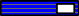

|
Blue Belt Curriculum
 Junior / Senior Throwing Techniques (Tachi waza)
Grappling Techniques (Holding) (Katame waza)
Shime waza (Strangulation techniques)
Kansetsu waza (Arm-lock techniques)
Nage no kata (Kata of throwing techniques)
Important: The formality of the kata is not emphasized at this level. What the student should practise is the action/reaction principle of the movement. It is most important that the student commit to a full attack and a follow through (keeping in mind that safety for the partner is most important). The tori (thrower) must react and harmonize to this committed attack and execute his/her own throw. If there is no full attack, there can be no throw. The student will then have to rely on muscle strength. This is not judo. Katame no kata (Kata of grappling techniques)
Important – The purpose of this kata [form] is to develop good basic skills in groundwork. Each movement has three attempted escapes and three follow up attacks to these attempts. The student has to feel the movement and instead of using muscle to resist the choke, s/he should follow the action of the partner to neutralize or escape the choke. Note - The formal bowing and sliding movement on the knees is not important at this level. Renraku waza (Combination techniques in standing judo)
Demonstrate three combination techniques chosen from among the techniques in the Blue Belt curriculum. Kaeshi waza (Counter techniques in standing judo)
Or Three counter attacks chosen from among the techniques in the Blue Belt curriculum. Kumi kata
Demonstrate three techniques from the Blue Belt curriculum using alternate gripping techniques. Judo Tournament Terminology
| Home
| Philosophy
| Instructors
| Honor Roll
| Events
| Contact us
|
| Schedule | Rank structure | NF Black Belts | NF Referees | | Affiliations | Coaching Staff | Links | Email webmaster | Page Stats | |